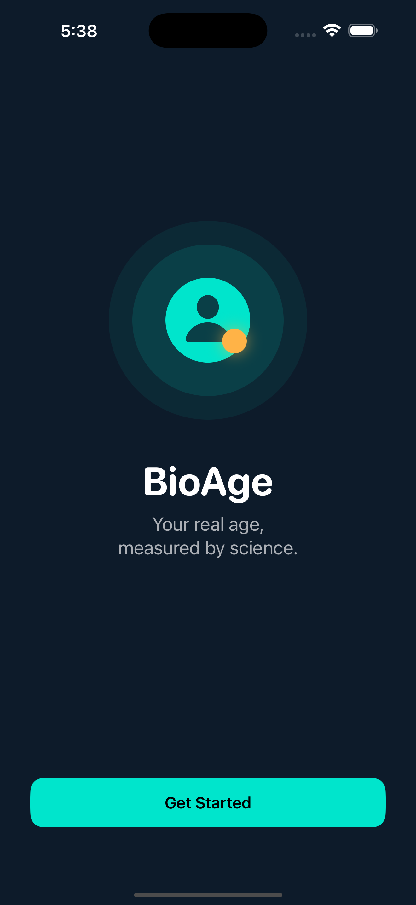
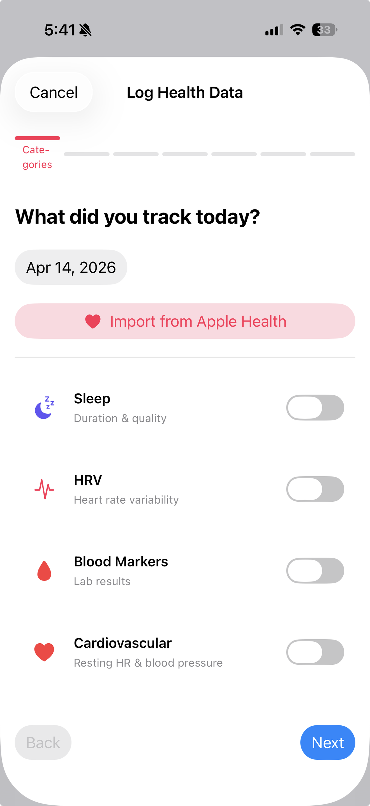
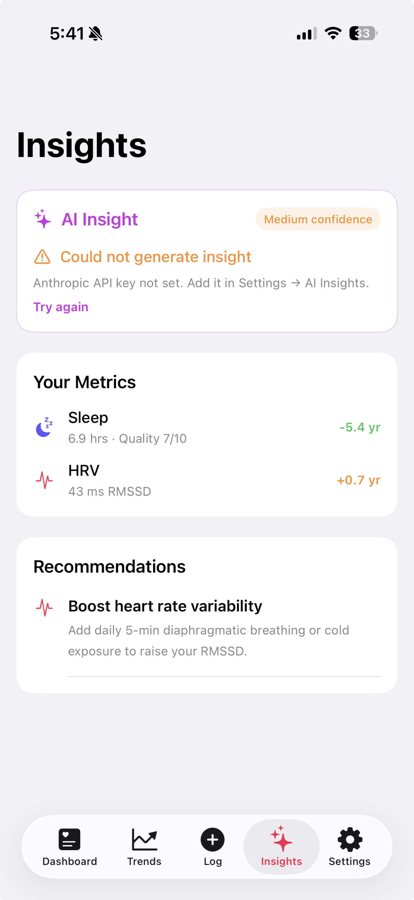

Sleep, HRV, blood markers, cardiovascular health, stress, reaction time, grip strength, and gait — each scored and weighted into a single biological age estimate.
Import sleep, HRV, and resting heart rate directly from Apple Health. Bring in up to 1 year of historical data in a single tap.
Claude AI generates plain-language coaching insights personalized to your health goals — streamed word-by-word in real time.
Measure reaction time, grip strength, and gait cadence using your iPhone sensors. These physical biomarkers contribute to a more complete biological age picture.
Track your biological age over time with line charts, per-category breakdowns, and streak tracking.
Scan lab documents with your camera and auto-fill blood marker values via OCR — no manual typing needed. Low-confidence reads are flagged for review.
View your biological age and delta from your wrist or home screen. Supports all 4 Watch complication families and an iOS Home Screen Widget.
All data stays on-device in the iOS Keychain. Biometric lock (Face ID / Touch ID) on every launch. Zero third-party SDKs — native Apple frameworks only.
Eight evidence-based pillars are scored independently and combined into a single biological age estimate. Missing pillars are gracefully excluded — the score always reflects the data you actually have.
Tap any pillar to learn more
Weights are redistributed proportionally when pillars are absent. Confidence is reported as the fraction of pillars present — so you always know how complete your score is.



The BioAge Watch app syncs automatically whenever you log a new entry. Check your bio age and delta at a glance — from your wrist or your home screen.